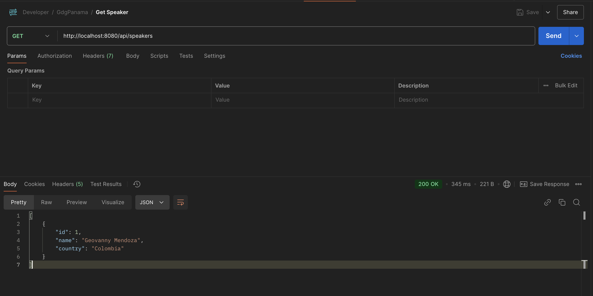

Fase 2: Creación de la Entidad, Repositorio, Servicio y Controlador
En esta sección implementaremos los componentes principales para nuestra API REST. Adicionalmente, configuraremos Flyway para las migraciones de base de datos y utilizaremos un archivo compose.yaml para ejecutar PostgreSQL localmente.
Creación de la API REST y Pruebas Locales
Estructura del Proyecto
El proyecto está organizado en una estructura clara y modular, siguiendo las mejores prácticas de desarrollo con Spring Boot y Kotlin. La siguiente jerarquía de carpetas y archivos refleja cómo se distribuyen las responsabilidades dentro del proyecto:
src
├── main
│ ├── kotlin
│ │ └── com.geovannycode
│ │ ├── 📄 KotlinGcpApplication.kt
│ │ ├── 📄 Speaker.kt
│ │ ├── 📄 SpeakerController.kt
│ │ ├── 📄 SpeakerRepository.kt
│ │ └── 📄 SpeakerService.kt
│ └── resources
│ ├── 📁 db
│ │ └── migration
│ │ ├── 📄 V1__Create_Speaker_Table.sql
│ │ └── 📄 V2__Add_Data_Speaker.sql
│ ├── 📁 static
│ ├── 📁 templates
│ └── 📁 application.properties
- Paquete principal (
com.geovannycode): Aquí se encuentran las clases esenciales de la API:KotlinGcpApplication: Es el punto de entrada de la aplicación. Inicializa Spring Boot y configura el servidor embebido (Tomcat).Speaker: Representa la entidadSpeakeralmacenada en la base de datos. Este modelo mapea los datos relacionales de la tabla PostgreSQL a un objeto Kotlin.SpeakerRepository: Define las operaciones necesarias para interactuar con la base de datos. Hereda métodos predefinidos de Spring Data JPA comofindAll,save,findById, ydeleteById.SpeakerService: Gestiona la lógica de negocio y las validaciones necesarias antes de interactuar con la base de datos.SpeakerController: Maneja las solicitudes HTTP y expone los endpoints REST para interactuar con los servicios de la API.
- Directorio de recursos (
resources):- Este directorio contiene configuraciones y scripts utilizados por la aplicación.
db/migration: Contiene los archivos SQL que Flyway utiliza para crear y modificar el esquema de la base de datos.V1__Create_Speaker_Table.sql: Crea la tabla speakers.V2__Add_Data_Speaker.sql: Inserta datos iniciales en la tabla para pruebas.
application.properties:- Archivo de configuración con datos de conexión a la base de datos y otras configuraciones de la aplicación.
- Este directorio contiene configuraciones y scripts utilizados por la aplicación.
1. Configuración Local: Base de Datos con Docker Compose
El archivo compose.yaml es usado para definir y administrar servicios de contenedores. En este caso, configuramos un contenedor de PostgreSQL que servirá como nuestra base de datos en el entorno local. A continuación, explicamos cada sección del archivo.
| docker-compose.yaml | |
|---|---|
-
Línea 1
services: Define los servicios que se van a levantar conDocker Compose. Aquí, configuramos un único servicio llamadopostgres_gcpque corresponde a un contenedor dePostgreSQL. -
Línea 2
postgres_gcp: Nombre del servicio dentro de Docker Compose. Este nombre puede ser utilizado para referenciar el contenedor en redes internas de Docker. -
Línea 3
container_name: "postgres_gcp" Asigna un nombre al contenedor que será visible cuando listemos los contenedores con docker ps. En este caso, el contenedor se llamarápostgres_gcp. -
Línea 4
image: 'postgres:17' Especifica la imagen que será utilizada para este servicio. Aquí usamos la versión17de la imagen oficial de PostgreSQL desdeDocker Hub. -
Línea 5
env_file: ./envIndica que las variables de entorno serán cargadas desde un archivo llamado.enven el mismo directorio donde está elcompose.yaml. Esto permite mantener las credenciales sensibles (como el usuario, contraseña y puerto) fuera del archivo principal. -
Línea 6
ports: Configura el mapeo de puertos entre el contenedor y el host local.${DB_LOCAL_PORT}:${DB_DOCKER_PORT}Esto utiliza las variables definidas en el archivo.env. El puerto local (DB_LOCAL_PORT) estará conectado al puerto del contenedor (DB_DOCKER_PORT). Por ejemplo, si definimosDB_LOCAL_PORT=5432, la base de datos será accesible enlocalhost:5432.
-
Línea 7
environment: Declara las variables de entorno necesarias para configurar PostgreSQL en el contenedor.POSTGRES_USER: Define el nombre del usuario administrador de la base de datos.POSTGRES_PASSWORD: Asigna la contraseña del usuario administrador.POSTGRES_DB: Especifica el nombre de la base de datos principal que se creará automáticamente cuando el contenedor se inicie.
-
Puntos Clave
- Configura las variables en el archivo
.env: Personaliza los valores como el puerto local, usuario y nombre de la base de datos. - Automatización con Docker Support: Si estás utilizando Docker Support integrado en IntelliJ IDEA o tu herramienta de desarrollo, no es necesario ejecutar comandos manuales (
docker-compose up). Al iniciar tu aplicación Spring Boot, Docker Support levanta automáticamente el contenedor de PostgreSQL. Esto simplifica el flujo de desarrollo.
- Configura las variables en el archivo
-
Ventajas de Docker Compose con Docker Support
- Ahorro de tiempo: No necesitas ejecutar manualmente
docker-composesiempre que inicies tu aplicación Spring Boot. - Integración: Docker Support coordina automáticamente la creación y administración del contenedor.
- Estandarización: Al definir configuraciones en
.env, todos los miembros del equipo pueden usar los mismos valores base.
- Ahorro de tiempo: No necesitas ejecutar manualmente
2. Migraciones con Flyway
Flyway es una herramienta de migración de base de datos que permite gestionar de forma controlada los cambios en el esquema y los datos iniciales. En este caso, utilizaremos Flyway para crear la tabla speakers y añadir datos iniciales en PostgreSQL.
2.1 Archivos de Migración
Flyway organiza los cambios en la base de datos mediante archivos de migración con un formato específico en el nombre, por ejemplo: V1__Create_Speaker_Table.sql y V2__Add_Data_Speaker.sql.
V1__Create_Speaker_Table.sqlEste archivo contiene las instrucciones para crear la tablaspeakersy su secuencia de IDs.
| V1__Create_Speaker_Table.sql | |
|---|---|
V2__Add_Data_Speaker.sqlEste archivo agrega un registro inicial en la tablaspeakerspara facilitar las pruebas.
| V2__Add_Data_Speaker.sql | |
|---|---|
2.2 Ubicación de los Archivos
-
Los archivos de migración deben estar ubicados en el directorio:
src/main/resources/db/migration. -
Esto es importante porque Flyway, por defecto, escanea esta ruta para aplicar las migraciones.
2.3 Flujo de Migración
- Inicio de la aplicación: Spring Boot detecta las configuraciones de Flyway y se conecta a la base de datos.
- Verifica las migraciones pendientes: Flyway consulta la tabla
flyway_schema_historyen la base de datos (si no existe, la crea automáticamente) para determinar qué migraciones aún no se han aplicado. - Aplica las migraciones: Flyway ejecuta los archivos en orden de versión (por ejemplo,
V1,V2, etc.). - Registro en
flyway_schema_history: Una vez aplicada una migración, Flyway registra el nombre del archivo, el estado y la fecha en esta tabla.
2.4 Ventajas de Flyway
- Control de versiones: Cada cambio en el esquema está versionado y registrado.
- Automatización: Al iniciar la aplicación, Flyway aplica automáticamente las migraciones pendientes.
- Reversibilidad: Facilita el mantenimiento de la base de datos al permitir manejar múltiples entornos con un esquema consistente.
3. Implementación Técnica
Punto de Entrada: KotlinGcpApplication.kt
El archivo KotlinGcpApplication.kt define el punto de entrada principal de nuestra aplicación. Es aquí donde Spring Boot inicia todo el proceso de configuración, creación de beans y levantamiento del servidor embebido (Tomcat).
| KotlinGcpApplication.kt | |
|---|---|
Esta clase define el punto de entrada de la aplicación:
- Línea 1
@SpringBootApplication: Esta anotación combina tres anotaciones clave de Spring Boot:@Configuration: Marca la clase como una fuente de configuraciones de Spring.@EnableAutoConfiguration: Activa la configuración automática de Spring Boot, cargando los componentes según las dependencias declaradas.@ComponentScan: Escanea automáticamente el paquete actual y sus subpaquetes en busca de clases anotadas como@Component,@Service,@Repository, etc., para registrarlas como beans en el contexto de la aplicación.
- Línea 2
class KotlinGcpApplication:- Define una clase vacía con el nombre de la aplicación. Aunque no contiene lógica adicional, Spring Boot la utiliza como punto central para identificar el contexto principal de la aplicación.
- Nota: El nombre de la clase es arbitrario, pero debe ser único dentro del paquete y representativo de la funcionalidad de la aplicación.
- Línea 4:
fun main(args: Array<String>)- Define la función
main, que es el punto de entrada estándar para cualquier aplicación escrita en Kotlin. Aquí es donde comienza la ejecución del programa.
- Define la función
- Línea 5
runApplication<KotlinGcpApplication>(*args): Esta línea ejecuta la funciónrunApplication, que realiza las siguientes tareas:- Inicia Spring Boot: Configura el contexto de la aplicación y todos los beans necesarios.
- Levanta el Servidor Embebido: En este caso, inicia un servidor Tomcat que se ejecuta en el puerto
8080por defecto. - Carga los Recursos de Configuración: Como
application.propertiesoapplication.yml, que contienen configuraciones clave como la conexión a la base de datos. - Procesa los Argumentos: Los parámetros pasados en
argsse interpretan como argumentos de línea de comandos para personalizar el comportamiento de la aplicación en tiempo de ejecución.
Nota:
El operador * delante de args se llama spread operator en Kotlin. Descompone el arreglo de argumentos para que puedan ser pasados individualmente como parámetros a la función runApplication.
3.1 Modelo de Datos: Speaker.kt
La clase Speaker.kt define el modelo de datos que representa la tabla speakers en la base de datos. Es una entidad JPA (Java Persistence API) que Spring Data utiliza para mapear automáticamente los registros de la base de datos a objetos Kotlin.
| Speaker.kt | |
|---|---|
- Línea 1
@Entity:- Marca la clase como una entidad JPA, lo que indica que está vinculada a una tabla en la base de datos.
Spring Boot: Detecta esta anotación durante el escaneo de componentes (gracias a@SpringBootApplication) y registra automáticamente la clase como una entidad administrada.
- Línea 2:
@Table(name = "speakers"):- Especifica el nombre de la tabla en la base de datos asociada con esta entidad.
- Línea 3
data class:- La clase
Speakerestá definida como una data class, lo que aporta las siguientes ventajas:- Inmutabilidad:
- Los valores de las propiedades son constantes (
val) y no pueden ser modificados después de la creación del objeto. - Esto es útil en aplicaciones donde los datos no deben cambiarse accidentalmente.
- Los valores de las propiedades son constantes (
- Métodos Automáticos Generados:
toString: Proporciona una representación de texto para imprimir fácilmente los objetos.equalsyhashCode: Facilitan la comparación entre objetos.copy: Permite crear una nueva instancia basada en un objeto existente con cambios en algunas propiedades.
- Compatibilidad con Kotlin/JPA:
- Las
data classse integran bien con JPA, siempre que cumplan las reglas básicas (como constructor primario completo).
- Las
- Inmutabilidad:
- La clase
- Línea 4
@Id: Define este campo como la clave primaria de la tabla. - Línea 5
@GeneratedValue: Especifica que el valor de este campo será generado automáticamente.strategy = GenerationType.SEQUENCE: Usa una estrategia de secuencia, que es eficiente para PostgreSQL.generator = "speaker_id_generator": Asocia este campo a un generador de secuencias específico.
- Línea 6
SequenceGenerator: Configura el generador de secuencias.name = "speaker_id_generator": Nombre del generador asociado.sequenceName = "speaker_id_seq": Nombre de la secuencia en la base de datos que generará los valores del campoid.
- Línea 7:
NullableSe define comoLong? = nullporque el valor inicial esnullhasta que se genera automáticamente al guardar el registro. - Campos:
id: Clave primaria generada automáticamente usando una secuencia PostgreSQL.name: Almacena el nombre del speaker.country: Almacena el país de origen del speaker.
3.2 Repositorio: SpeakerRepository.kt
El repositorio es una interfaz que permite interactuar con la base de datos de manera directa, manejando operaciones CRUD (Crear, Leer, Actualizar y Eliminar) sin necesidad de escribir código SQL manualmente. En este caso, SpeakerRepository hereda de CrudRepository, una clase proporcionada por Spring Data JPA.
- Línea 2:
interface SpeakerRepository : CrudRepository<Speaker, Long>interface: Define queSpeakerRepositoryes una interfaz, no una clase.: CrudRepository<Speaker, Long>:CrudRepositoryes una interfaz genérica que requiere dos parámetros:Speaker: Es la entidad sobre la que este repositorio operará.Long: Es el tipo de dato de la clave primaria de la entidad Speaker.
Nota Importante: Spring implementa automáticamente esta interfaz al detectar su definición durante el escaneo de componentes. No es necesario escribir código adicional para implementar esta interfaz, lo que ahorra tiempo y esfuerzo.
- Este repositorio hereda de
CrudRepository, proporcionando métodos como:findById: Busca un registro por su ID.findAll: Devuelve todos los registros.save: Guarda o actualiza un registro.deleteById: Elimina un registro por ID.
3.3 Servicio: SpeakerService.kt
El archivo SpeakerService.kt implementa la lógica de negocio para la API REST. Actúa como un intermediario entre el controlador y el repositorio, asegurando que las operaciones CRUD (Crear, Leer, Actualizar y Eliminar) se realicen de manera controlada.
- Línea 1:
@ServiceMarca esta clase como un servicio administrado por Spring. Spring Boot Detecta automáticamente esta anotación durante el escaneo de componentes y la registra como unbeandisponible en el contenedor de la aplicación.- Ventaja: Permite inyectar esta clase en otros componentes (
como el controlador)sin necesidad de inicializarla manualmente.
- Ventaja: Permite inyectar esta clase en otros componentes (
- Línea 2:
@TransactionalGarantiza que todas las operaciones dentro de este servicio se ejecuten dentro de una transacción.- Ventajas:
- Si ocurre un error en cualquier parte del método, todas las operaciones realizadas dentro de la transacción serán revertidas.
- Asegura consistencia en la base de datos.
- Ventajas:
- Línea 3
Constructor: private val repo: SpeakerRepository- Inyecta automáticamente el repositorio
SpeakerRepositoryen el servicio. - Esto permite acceder a los métodos predefinidos en
CrudRepository(comofindAll,save, etc.) para interactuar con la base de datos.
- Inyecta automáticamente el repositorio
- Línea 4
getSpeakers: Devuelve una lista de todos los registros en la tabla speakers.- Detalle:
repo.findAll(): Devuelve unIterable<Speaker>..toList(): Convierte el iterable en una lista, que es más fácil de manejar.
- Detalle:
- Línea 5
getSpeaker: Busca un registro por su clave primaria (id) y lo devuelve. Si no existe, devuelvenull.- Detalle:
repo.findById(id): Devuelve unOptional<Speaker>..orElse(null): Extrae el valor si existe, o devuelvenullsi no lo encuentra.
- Detalle:
- Línea 6
createSpeaker: Inserta un nuevo registro en la base de datos.- Detalle:
repo.save(speaker): Guarda el objetoSpeakeren la base de datos y devuelve la entidad guardada con su clave primaria (id) asignada.
- Detalle:
- Línea 7
deleteSpeaker: Elimina un registro por su clave primaria (id).- Detalle:
repo.deleteById(id): Elimina el registro correspondiente en la base de datos.
- Detalle:
- Línea 8
updateSpeaker: Actualiza un registro existente en la base de datos. Si no existe, devuelve null.- Detalle:
repo.existsById(id): Verifica si el registro con elidespecificado existe.updatedSpeaker.copy(id = id): Crea una nueva instancia del objetoSpeakercon el id correcto.repo.save(speakerToUpdate): Guarda el registro actualizado.
- Detalle:
3.4 Controlador REST: SpeakerController.kt
El controlador REST es la capa que expone la lógica de negocio a través de la red utilizando la arquitectura REST (Representational State Transfer). Esto permite interactuar con la API mediante solicitudes HTTP estándar como GET, POST, PUT, DELETE, entre otros.
¿Por Qué @RestController?
@RestControlleres una anotación de Spring que combina@Controllery@ResponseBody.-
Todos los métodos en una clase marcada como
@RestControllerretornan automáticamente los datos en formato JSON o XML, según lo que soporte el cliente. -
Ventajas:
- Simplifica la creación de controladores RESTful al eliminar la necesidad de agregar
@ResponseBodyen cada método. - Los datos devueltos por los métodos no se renderizan como vistas HTML (como lo haría un
@Controllertradicional), sino como una respuesta HTTP con un cuerpo en formato JSON.
- Simplifica la creación de controladores RESTful al eliminar la necesidad de agregar
-
Arquitectura REST:
- REST sigue los principios HTTP para operar con recursos.
- Cada recurso tiene una representación única (en este caso, la entidad Speaker) y puede ser manipulado utilizando verbos HTTP.
Este archivo expone los endpoints para interactuar con la API:
-
Líneas 6-8: Define el método que maneja solicitudes
GETen el endpoint/api/speakers.- Permitir al cliente obtener una lista de todos los
Speakerregistrados en la base de datos. - Anotaciones importantes:
@GetMappingEspecifica que este método manejará solicitudes HTTP con el verboGET. Este tipo de solicitud se utiliza comúnmente para recuperar información sin modificar el estado del servidor. - Flujo del método: Llama al servicio (
service.getSpeakers()) para recuperar una lista con todos los registros deSpeaker.- Devuelve un
ResponseEntitycon:- Código HTTP
200 OK, que indica éxito en la solicitud. - Cuerpo de la respuesta: Un listado JSON con los objetos
Speaker.
- Código HTTP
- Códigos de respuesta:
- 200 OK: Indica que la solicitud fue exitosa. Si no hay speakers registrados, se devuelve una lista vacía.
- Devuelve un
- Permitir al cliente obtener una lista de todos los
-
Líneas 11-14: Define el método que maneja solicitudes
GETcon un parámetro dinámico (id) en el endpoint/api/speakers/{id}.- Permitir al cliente recuperar la información de un
Speakerespecífico usando su ID único. - Anotaciones importantes:
@GetMapping("/{id}")Asigna este método a solicitudesGETcon un identificador dinámico ({id}) en la URL. y con el@PathVariableExtrae el valor{id}de la URL y lo asigna al parámetroid. Esto facilita el uso de rutas dinámicas. - Flujo del método: El servidor recibe la solicitud con el ID proporcionado en la URL.
- Llama al servicio (
service.getSpeaker(id)) para buscar elSpeakercorrespondiente. - Si el registro es encontrado devuelve un
ResponseEntitycon:- Código HTTP
200 OK, que indica éxito en la solicitud. - Cuerpo de la respuesta: El objeto
Speakerencontrado.
- Código HTTP
- Si no existe devuelve un
ResponseEntitycon:- Código HTTP
404 Not Found, indicando que el recurso solicitado no existe.
- Código HTTP
- Códigos de respuesta:
200 OK: ElSpeakerfue encontrado exitosamente.404 Not Found: No se encontró ningún registro con el ID proporcionado.
- Llama al servicio (
- Permitir al cliente recuperar la información de un
-
Líneas 17-19: Define el método que maneja solicitudes
POSTen el endpoint/api/speakers.- Este método permite al cliente crear un nuevo registro de
Speakerenviando los datos en formatoJSON. Utiliza el servicio (service.createSpeaker) para procesar y almacenar el objeto recibido en la base de datos. - Anotaciones importantes:
@PostMappingEspecifica que este método responderá a solicitudesHTTPcon el verboPOST. Este tipo de solicitud se utiliza comúnmente para crear nuevos recursos en un servidor. Por otro lado el@RequestBodyindica que el cuerpo de la solicitud HTTP (enviado por el cliente) será deserializado automáticamente a un objetoSpeaker. Esto simplifica la lectura de datosJSONenviados por el cliente. - Flujo del método: Recibe un objeto JSON en el cuerpo de la solicitud (por ejemplo, un Speaker con atributos como name y country).
- Convierte este
JSONa un objetoSpeakerusando la anotación@RequestBody. - Llama al servicio (
service.createSpeaker(speaker)) para guardar este objeto en la base de datos. - Devuelve un
ResponseEntitycon:- Código HTTP
200 OKindicando que la solicitud se procesó correctamente. - Cuerpo de la respuesta: El objeto Speaker recién creado, con su
idgenerado automáticamente por la base de datos.
- Código HTTP
- Códigos de respuesta:
200 OK: Se devuelve cuando el objeto se crea correctamente.Errores: No se manejan errores explícitos en este método, pero posibles problemas (como validación fallida) se deben manejar en otro nivel (por ejemplo, en las anotaciones de validación).
- Convierte este
- Este método permite al cliente crear un nuevo registro de
-
Líneas 22-26: Define el método que maneja solicitudes
DELETEen el endpoint/api/speakers/{id}.- Permitir al cliente eliminar un
Speakerespecífico usando suIDúnico. - Anotaciones importantes:
@DeleteMapping("/{id}")Asigna este método a solicitudesDELETEcon un identificador dinámico en laURLy el@PathVariableExtrae el valor{id}de la URL y lo asigna al parámetroid. - Flujo del método: El servidor recibe la solicitud con el ID del recurso a eliminar.
- Llama al servicio (service.deleteSpeaker(id)) para realizar la eliminación en la base de datos.
- Devuelve un ResponseEntity con:
- Código HTTP
200 OK, que indica éxito en la solicitud.
- Código HTTP
- Códigos de respuesta:
204 No Content: El Speaker fue eliminado exitosamente.
- Permitir al cliente eliminar un
-
Líneas 29-37: Define el método que maneja solicitudes
PUTen el endpoint/api/speakers/{id}.- Permitir al cliente actualizar un registro existente de
Speakerenviando los nuevos datos en formatoJSON. - Anotaciones importantes:
@PutMapping("/{id}")Asigna este método a solicitudesPUTcon un identificador dinámico en la URL. y@PathVariableExtrae el valor{id}de la URL y lo asigna al parámetroidy por ultimo@RequestBodyque convierte el cuerpoJSONde la solicitud en un objeto Speaker. - Flujo del método: Recibe un objeto JSON con los nuevos datos del Speaker.
- Llama al servicio (
service.updateSpeaker(id, updatedSpeaker)) para realizar la actualización. - Si el registro existe devuelve un
ResponseEntitycon:- Código HTTP
200 OK. - Cuerpo de la respuesta: El objeto Speaker actualizado.
- Código HTTP
- Si no existe devuelve un
ResponseEntitycon:- Código HTTP
404 Not Found
- Código HTTP
- Códigos de respuesta:
200 OK: ElSpeakerfue actualizado exitosamente.404 Not Found: No existe un registro con el ID proporcionado.
- Llama al servicio (
- Permitir al cliente actualizar un registro existente de
4. Pruebas Locales con Postman
Una vez que la API REST está implementada y la base de datos configurada, podemos probar los endpoints utilizando Postman, una herramienta de pruebas para APIs REST.
La Figura #1 muestra un ejemplo de la respuesta al probar este endpoint con Postman.

Figura # 1: Representación del Postman
- Ejemplo:
GET /api/speakers: Recupera todos los speakers.POST /api/speakers: Crea un nuevo speaker con este JSON:PUT /api/speakers/{id}: Actualiza un speaker.DELETE /api/speakers/{id}: Elimina un speaker.
5. Continuación del Proyecto
En la próxima sesión/documento, avanzaremos con la integración de esta API REST en Google Cloud Platform (GCP).
- Exploraremos las siguientes tareas:
- Despliegue de la aplicación en App Engine.
- Configuración de la base de datos en Cloud SQL.
- Automatización del flujo de despliegue utilizando Cloud Build.
¡Prepárate para llevar esta aplicación a la nube! 🚀
6. Resumen General
En este taller, desarrollamos una API REST con Kotlin, Spring Boot y PostgreSQL.
Los pasos principales fueron:
-
Configuración del Proyecto:
- Usamos
Spring Initializrpara generar el proyecto con dependencias clave. - Organizamos el código en paquetes y recursos para una estructura clara.
- Usamos
-
Implementación de la API:
- Creamos la entidad
Speaker, el repositorioSpeakerRepository, el servicioSpeakerServicey el controladorSpeakerControllerpara exponer endpoints REST (GET, POST, PUT, DELETE). - Implementamos lógica de negocio para gestionar operaciones
CRUD.
- Creamos la entidad
-
Base de Datos Local:
- Configuramos PostgreSQL con Docker Compose.
- Usamos Flyway para manejar migraciones de base de datos y datos iniciales.
-
Pruebas Locales:
- Probamos los endpoints con Postman, verificando códigos de respuesta (
200 OK, 404 Not Found, etc.) y datos retornados en formatoJSON.
- Probamos los endpoints con Postman, verificando códigos de respuesta (
-
Próximos Pasos
- En la próxima sesión, desplegaremos esta API en
Google Cloud Platform (GCP)utilizandoApp Engine,Cloud SQLyCloud Build.
- En la próxima sesión, desplegaremos esta API en